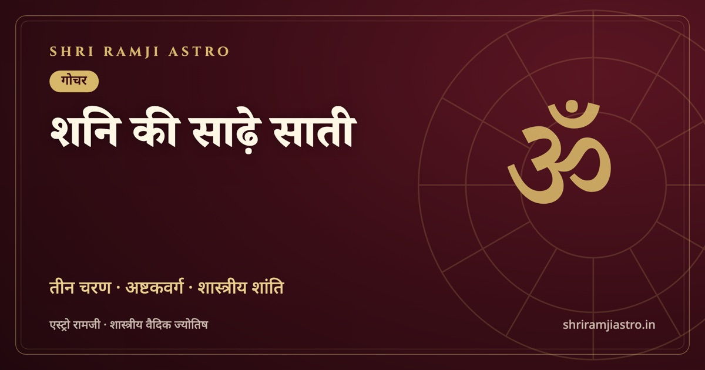

गोचर
📅 31 अक्टूबर 2026
शनि की साढ़े साती — तीन चरण, असली प्रभाव और शास्त्रीय उपाय
साढ़े साती वह लगभग साढ़े सात वर्ष का समय है जब शनि जन्म-चंद्र राशि से 12वीं, पहली और दूसरी राशि में गोचर करता है। हर राशि में शनि लगभग ढाई वर्ष रहता है, इसलिए तीन चरण बनते हैं।…